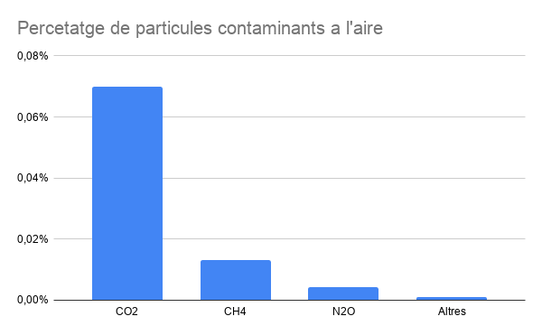

L'única manera posible d’observar quan la contaminació atmosfèrica és perillosa és mesurant-la. La contaminació atmosfèrica es mesura tenint en compte les quantes partícules per milió hi ha en l’aire. L’unitat de mesura utilitzada són les ppm (partícules per milió). Per exemple, el nivell normal de CO₂ a l'aire és de 360 ppm mentre que el nivell mitjà a ciutats és de 700 ppm. El que vol dir que cada 1 milió de partícules, en les ciutats, hi ha 700 de CO₂, el que vol dir que el 0,07% de partícules en les ciutats són de CO₂. També es mesura el nivell d'altres gasos a part del diòxid de carboni com el monòxid de carboni (molt més mortal), hidrocarburs, els òxids de nitrogen i altres agents contaminants.
La qualitat de l'aire es mesura amb diferents tipus de sensors que estan situats en algunes de les diferents estacions meteorològiques de Catalunya.
